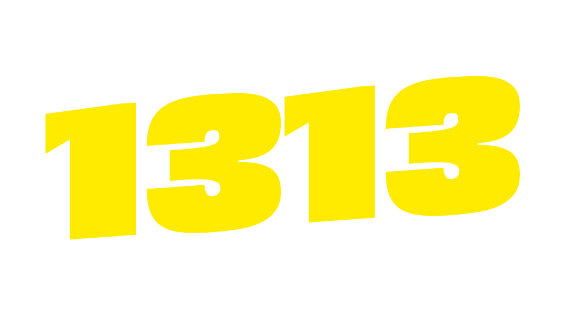

Rádio online

Sintonize com a gente
Rádio Jorge Solla 1313
Clique para carregar o player oficial e ouvir a programação da rádio.
O player do zeno.fm só é carregado depois do seu clique.
iframe zeno.fm
Placeholder do widget oficial carregado após o clique
Player fornecido por zeno.fm. Ao usar, você acessa um serviço externo.